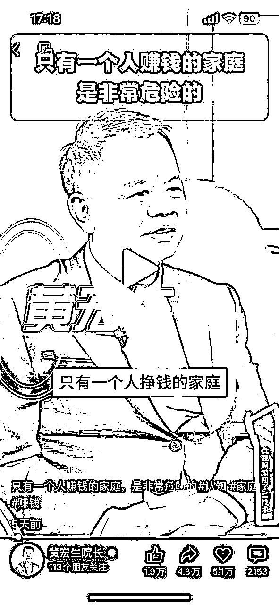
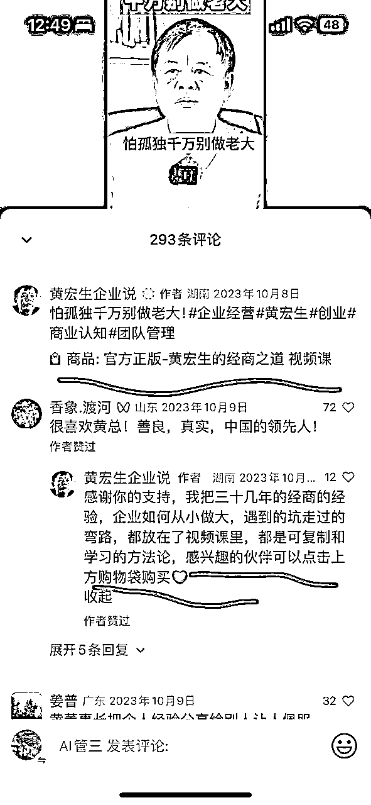
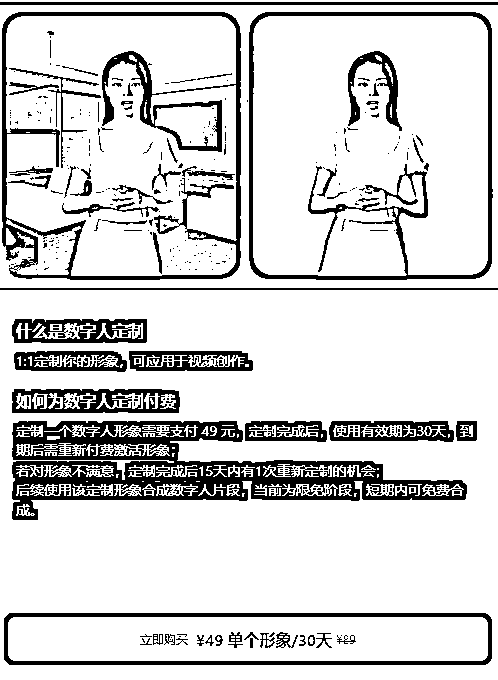
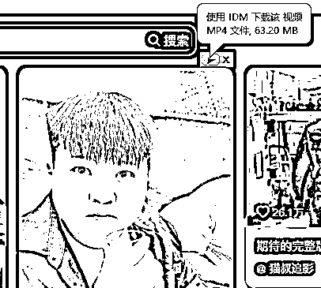
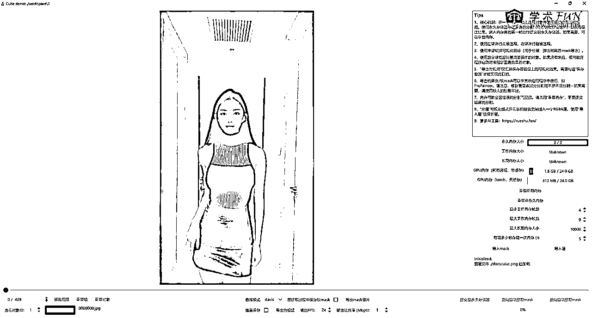
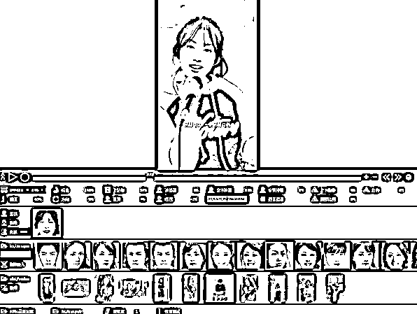
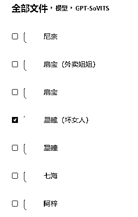
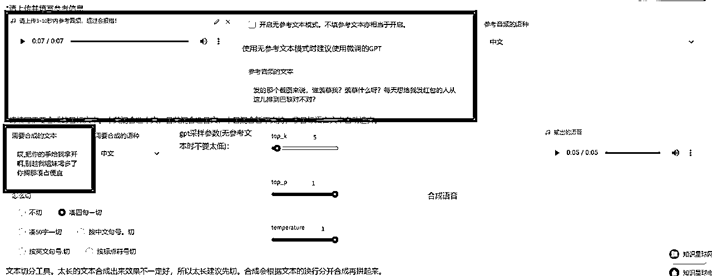
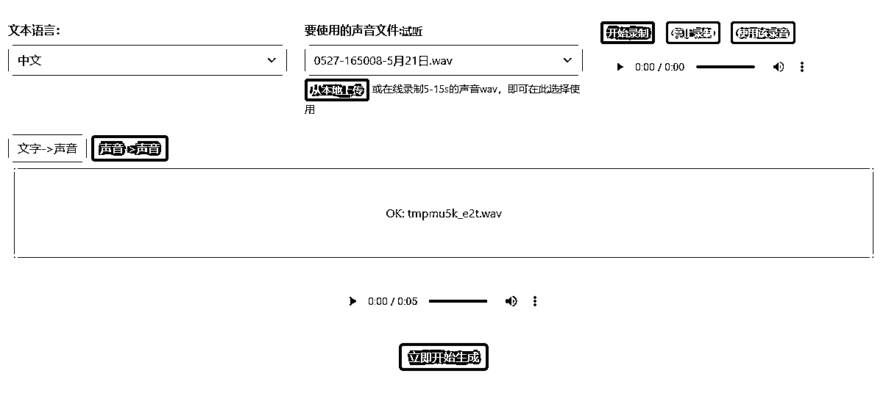
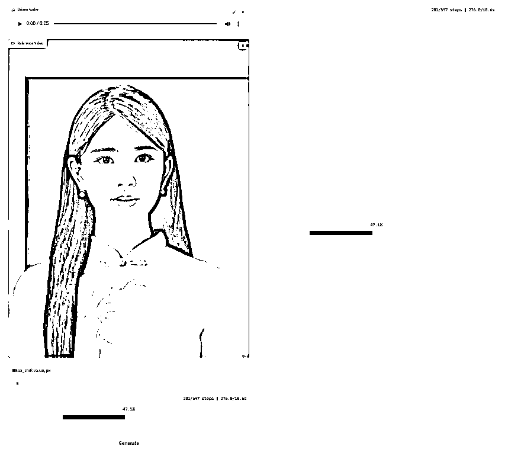

来源：https://ovumyiw67u1.feishu.cn/docx/ZIQSdEEbQoqn4sxIbA5ciUYSnlh
嗨，大家好，我是RIO
作为AI爱好者，说两句真心话
今天分享主题是数字人+视频号带货
这也是本人第三次航海的复盘
本来这次航海主要目的是训练真人出镜的种草能力
教练把上游选品与下游代播佣金结算的资源都提供了
学员只要按要求录视频就好
但我到了第7天还是决定下船退出了
原因是跟我的"能用机器绝不真人"原则相悖，航海要求真人实拍
而且看到好多“空调清洗剂”“调味酱”圈友视频后，心想一窝蜂去做这些品，也不会有什么甜头
很有可能忙活半个月，只收获一个“影帝影后”奖状
但我这7天的航海主要在思考
有没有可能虚拟一个“我”，去替我去演呢？我要他怎么演他就怎么演
一旦平台跳验证，可以扫自己的脸，平台拿我没办法
好处在于
1、口播稿，随时可以改，不用费脑子记
2、语音语调，可以按需要调整，不用废嗓子
3、矩阵化，同个造型可以搭配不同音频视频，生成多个原创视频
4、成本可控，不用买服装道具，不用买拍摄器材，不用买绿幕，只需一台N卡电脑
最近一个利用数字人技术获取大量流量的案例——黄宏生院长，圈友发在风向标里，证明了我的想法

他们团队通过AI数字人技术，给他做了非常多的矩阵，做了很多不同场景的数字人分身，做了近20个账号，流量过亿。而且明确的变现路径，评论区引导进橱窗卖课，这种比较适合做IP做矩阵。

要做数字人，有很多付费软件，最近剪映开放了新功能，算业界良心，单个形象 49元/月

但是，我们秉承着“能不花钱绝对不付费”原则，尝试去找其他路子
看能不能做出一个“完美”的数字人
为什么说完美，因为之前版本这些工具或多或少都有破绽
一直都不敢拿出来，因为一眼AI了
但最近重新研究了一下，发现AI有重大突破
解决了几个大难题
1、肢体动作不受限制，不会影响脸部与唇部
2、语音有情绪了，听不出机器味道
3、生成时间减少了，算法有优化
截止现在2024年5月27日，能从各位大佬收集了以下工具：
抠图去背景--- Cutie
例如抠图去背景，以前能难抠的肢体动作，现在动态识别，你只需抠好第一帧
换脸---ROPE
例如换脸，以前人脸被遮了他无法换，导致某几个帧没换，很容易穿帮，现在都克服了
文本生成音频---GPT-SoVITS
例如文本生成音频，以前是没情感的朗读，现在可以复制语气语调
语音克隆--- clone-voice
例如语音克隆，训练集很高要求，但现在只需要10秒的音频，就能克隆你的音色
音频驱动视频---MuseTalk
例如音频驱动视频，时不时嘴瓢了，嘴打不开，现在可以调整了，还跑得比较快
这都是可跑的科技，看看我一步一步做出自己的数字人
看着最终效果，看的出来哪个是原视频，哪个是数字人么
①、首先从抖音下载视频、我用的是IDM，喜欢那种“看到即所得”的感觉

②、导入剪映，建议买会员，有些功能很值得买，常用的是镜头智能分割、 导出文本，超清画质，变老
我们需要
1、口播稿：语音转成文字，
2、仅保留人像的镜头
3、产品切片
③、把人抠出来，建议一个个镜头处理处理比较好，因为这个软件镜头一旦切换就报错

④、换人脸，记得把高清开上

①、口播稿去洗稿，最近看新说唱多了，我喜欢让GPT改写成短句而且要押韵
②、下载喜欢的腔调大模型，最好选一个你熟悉的

③、选一句带劲的音频做参考做语气语调
④、导入模型与参考语气，输入自己想要的文案

⑤、导入自己的声音文件，使用以声音-->声音模式，导入④生成的音频，结果得到了 你的声音用她的语气说的文案

①、把抠好的人像视频与音频导入回剪映，需要更换背景可以更换背景，这里需要一边听音频一边对齐音视频，技巧点在于，举手指的时候刚好是关键词的地方，比较有感觉
②、基于对musetalk尿性了解，尽量使用短视频，小步迭代比较靠谱，单独某段生成不好可以重新生成，切割方法可以用到剪映的 “以时间区域导出视频”
③、一开始用几秒的音频试试，看看口型张够不够大，不够可以调参数，之后可以配合PRA，分段导入跑程序，通常安排在晚上跑，明天起来有可用的素材

④、把这些片段都导回剪映，然后加上超清，加上字幕，加变老，拼接火车头与产品切片，就完成啦
简单的说，一个视频
人脸是自己的
语音是自己的
文案是自己的
背景是自己的
衣服是别人的
动作是别人的
明白了没？
当然最好买个绿幕
拍自己动作与衣服
成本如何？
生成视频的成本取决你的电脑的显卡
不用年费，不受时长限制
看到有人教人用付费的平台做数字人
还看到有人拿这些技术来割韭菜的
作为AI武器研究所成员，表示很生气
想不明白，免费的没人用，都跑去送人头